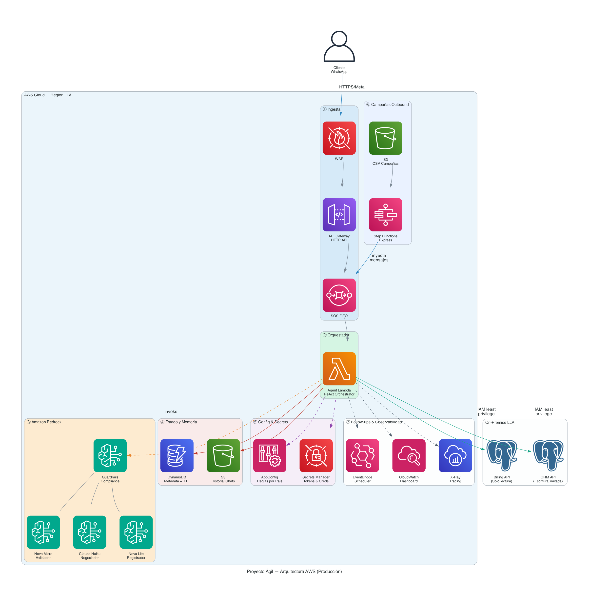

Resumen Ejecutivo
Para equipos de negocio, tecnología y legal
El canal
WhatsApp tiene +90% de tasa de apertura en Panamá frente al 20-30% del correo. El agente se comunica en el canal donde el cliente ya está.
La solución
4 agentes especializados de IA orquestan la conversación: validan identidad, negocian el pago, registran acuerdos y escalan a humano cuando es necesario.
El impacto
Costo estimado de $0.002 por conversación completa vs $2–5 de un agente humano en call center — reducción del 99.9% en costo por interacción.
¿Qué puede hacer el agente?
Arquitectura AWS
100% Serverless — escala de cero a miles de conversaciones sin infraestructura fija

Decisiones clave
- HTTP API en lugar de REST API — 70% más barato para un webhook receiver
- SQS FIFO — ordena mensajes del mismo cliente; HTTP 200 a Meta en <100ms
- Sin Tool Lambdas — el orquestador llama APIs directamente, eliminando 200–500ms por herramienta
- Bedrock Guardrails — compliance dentro del mismo llamado al modelo, sin LLM extra
- DynamoDB + S3 — metadata en DDB (acceso rápido), historial completo en S3 (sin límite 400KB)
- Step Functions Express — 40× más barato que Standard para campañas masivas
Selección de modelo por agente
| Agente | Modelo | Razón |
|---|---|---|
| Validador | Nova Micro | Detección binaria simple |
| Negociador | Claude Haiku | Razonamiento complejo |
| Registrador | Nova Lite | Extracción estructurada |
| Supervisor | Guardrails | Sin LLM call extra |
Cómo funcionan los Agentes
Patrón ReAct (Reason & Act) con especialización por fase de la conversación
Agente 1 — Validador
Confirma que habla con el titular de la línea. Sin acceso a datos de deuda.
Agente 2 — Negociador
Propone pago total → 2 cuotas → 3 cuotas → promesa → canales alternativos. Adapta tono según riesgo del cliente.
Agente 3 — Registrador
Extrae monto y fecha del historial y los registra formalmente en el CRM.
Agente 4 — Cierre
Confirma el acuerdo, celebra y cierra la sesión con calidez.
Flujo de una conversación típica
Latencia objetivo p95: <5 segundos desde que el cliente envía el mensaje hasta que recibe respuesta.
Seguridad, Compliance y Legal
Capas de protección técnicas y consideraciones regulatorias
🛡️ Protección contra Prompt Injection
El riesgo: un cliente malintencionado intenta usar el agente como un ChatGPT de propósito general, incurriendo en costos no autorizados de LLM.
⚖️ Consideraciones Legales (Panamá)
🔐 IAM Least Privilege — Sin acceso directo a bases de datos
- ✓ billing:Read (solo GET)
- ✓ crm:WritePromise
- ✓ crm:WriteEscalation
- ✓ s3:GetObject (bucket chats)
- ✓ s3:PutObject (bucket chats)
- ✓ dynamodb:GetItem / PutItem
- ✗ dynamodb:Scan / DeleteItem
- ✗ s3:DeleteObject
- ✓ s3:GetObject (bucket campañas)
- ✓ sqs:SendMessage
- ✗ bedrock:* (no invoca LLM)
- ✗ crm:* (no escribe CRM)
- ✓ TLS 1.2+ en todas las APIs
- ✓ S3 SSE-S3 (cifrado en reposo)
- ✓ DynamoDB encryption at rest
- ✓ Secrets Manager (rotación auto)
- ✓ VPC para acceso a sistemas core
Métricas y Observabilidad
Dashboard propuesto en Datadog — métricas de negocio y técnicas
NEGOCIO KPIs para el área comercial y financiera
Meta: > 30% en 30 días
lla.business.payment.immediate
Meta FCR: > 60%
tag: channel:bot|human
Esperado bot: < 8 min
Meta: < 20% de sesiones
Meta: > 70%
Alerta si > 5%
TÉCNICO KPIs para el equipo de operaciones
p95 Meta: < 5,000ms
p99 Meta: < 8,000ms
tag: reason:aggressive|complex|timeout
Alerta si > 5% en ventana 5min
tag: agent:validador|negociador|registrador
Alerta si > 0.5%
tag: reason:length|pattern|turns
Integración con Datadog — Ejemplo de instrumentación
Cómo emitir estas métricas desde el código Python del Agent Lambda
# Instalar: pip install datadog-lambda
from datadog_lambda.metric import lambda_metric
import time
# En multi_agent.py — dentro de procesar_mensaje()
def procesar_mensaje(historial_mensajes, fase_actual):
t_inicio = time.time()
# ... lógica del agente ...
latencia_ms = (time.time() - t_inicio) * 1000
# Métrica de latencia end-to-end
lambda_metric("lla.agent.response.latency", latencia_ms,
tags=[f"phase:{fase_actual}", "env:prod"])
# Métrica de resultado de sesión
lambda_metric("lla.business.conversation.outcome", 1,
tags=[f"outcome:{outcome}", f"phase:{nueva_fase}"])
return texto_limpio, chat_activo, historial_actualizado, nueva_fase
# En validar_input() — cuando se rechaza un mensaje
def validar_input(texto, turno_actual):
if len(texto) > MAX_INPUT_LENGTH:
lambda_metric("lla.security.input.rejected", 1,
tags=["reason:length", "env:prod"])
return False, "..."
for patron in _PATRONES_OFFTOPIC:
if patron in texto.lower():
lambda_metric("lla.security.input.rejected", 1,
tags=["reason:pattern", f"pattern:{patron[:20]}", "env:prod"])
return False, "..."
# En escalar_a_humano() — tool
@tool
def escalar_a_humano(telefono: str, motivo: str) -> str:
lambda_metric("lla.agent.escalation", 1,
tags=[f"reason:{motivo[:30]}", "env:prod"])
...
# En registrar_promesa_pago() — tool
@tool
def registrar_promesa_pago(telefono, monto_usd, fecha_promesa):
lambda_metric("lla.business.payment.promise", monto_usd,
tags=["env:prod"])
...
# En registrar_pago_inmediato() — tool
@tool
def registrar_pago_inmediato(telefono, monto_usd):
lambda_metric("lla.business.payment.immediate", monto_usd,
tags=["env:prod"])
...
En el serverless.yml o template.yaml de la Lambda, habilitar la extensión Datadog con
DD_FLUSH_TO_LOG: true y el layer arn:aws:lambda:...:datadog:DatadogExtension:....
Las métricas aparecen en Datadog sin modificar permisos IAM — se envían vía CloudWatch Logs.
Estimación de Costos
Basado en precios públicos de AWS — región us-east-1
10,000 conversaciones / mes
5 turnos promedio · 3 invocaciones Bedrock por turno
| Servicio | Costo/mes |
|---|---|
| API Gateway HTTP API | $0.05 |
| SQS FIFO | $0.03 |
| Lambda (orquestador) | $0.80 |
| Bedrock Nova Micro (Validador) | $0.60 |
| Bedrock Claude Haiku (Negociador) | $4.00 |
| Bedrock Nova Lite (Registrador) | $1.00 |
| Bedrock Guardrails | $3.75 |
| DynamoDB on-demand | $0.50 |
| S3 (historial + campañas) | $0.30 |
| EventBridge + Step Functions | $0.01 |
| Secrets Manager | $2.00 |
| WAF + CloudWatch + X-Ray | $8.05 |
| TOTAL | ~$21/mes |
100,000 conversaciones / mes
Escalando los costos variables
Comparación vs call center humano
Palancas de optimización adicional
- → Bedrock Prompt Caching: system prompts idénticos → 90% menos en tokens de entrada
- → Truncar historial: últimos 10 turnos en lugar del historial completo
- → Lambda Provisioned Concurrency: solo durante horas de campaña